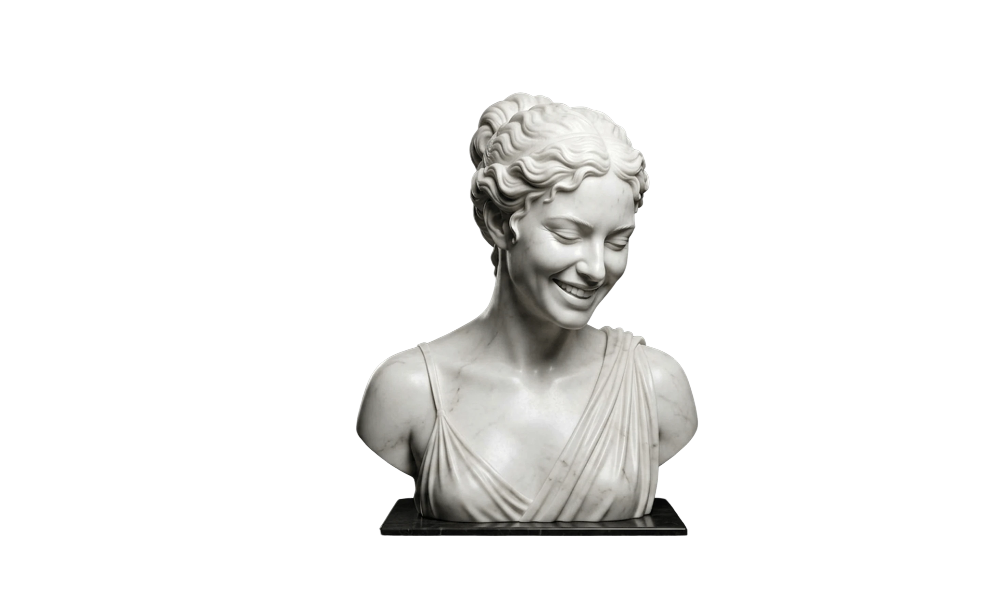
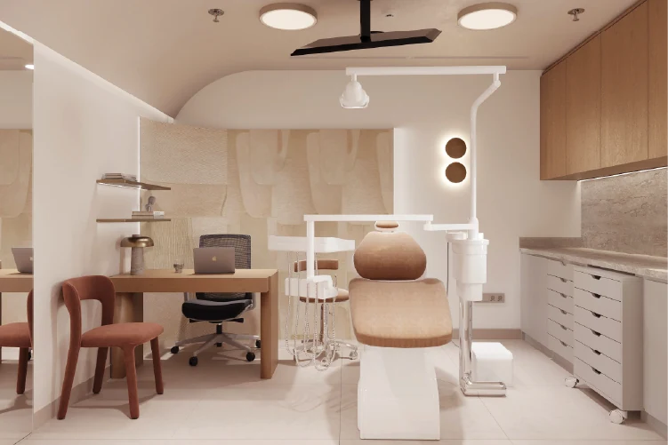
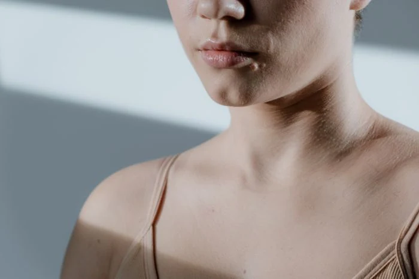
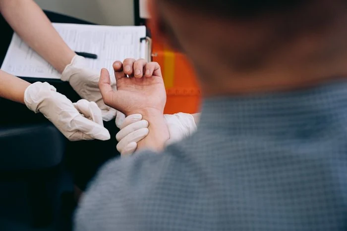
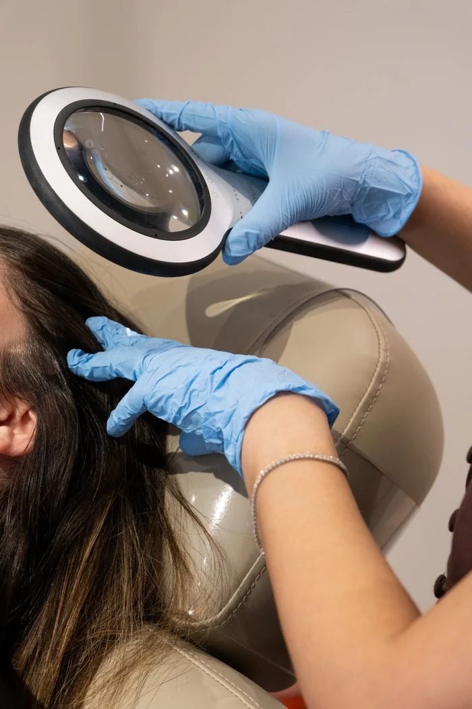
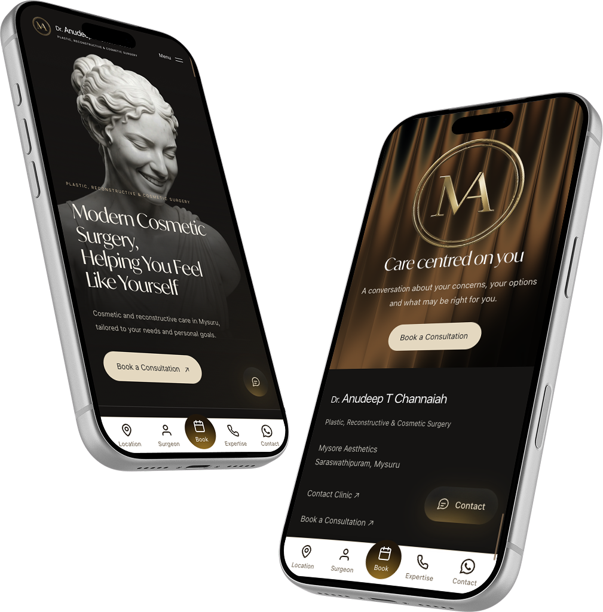
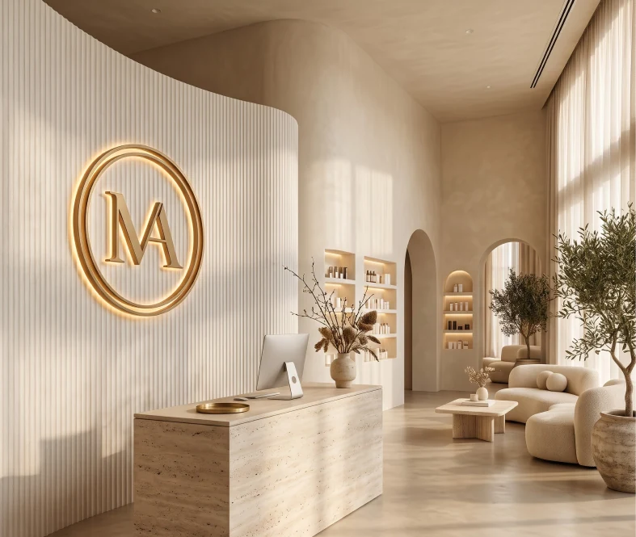

Mysore Aesthetics
Brand
guide.
The belief
Care centred
on you.

01
Identity.
02
Colour.
#FDFBF5#151412#E0C4A0#FDFBF5#F6F1E7#EDE9DD#E8DDC6#E0C4A0#74644F#6C645A#2C2C2C#151412Colour specifications
| Role | Value | Token / scope |
|---|---|---|
| Page ivory | #FDFBF5 | --surface-page |
| Soft sand | #EDE9DD | --surface-sand |
| Expertise cream | #F6F1E7 | --surface-expertise |
| Deep neutral | #151412 | --surface-dark |
| Heading | #2C2C2C | --text-heading |
| Body | #6C645A | --text-body |
| Readable accent | #74644F | --text-accent |
| Gold | #E0C4A0 | --accent-gold |
| CTA cream | #E8DDC6 | --button-cta-surface |
| Editorial background | #F4F0E7 | Editorial sections |
| Editorial heading | #29251F | Editorial sections |
| Editorial body | #686056 | Editorial sections |
| Practice panel | #E8E1D3 | Editorial sections |
| Editorial accent | #75614A | Editorial sections |
03
Typography.
IvyMode
Display / 400Aa
ABCDEFGHIJKLMNOPQRSTUVWXYZ
abcdefghijklmnopqrstuvwxyz
0123456789
& @ ! ? ( ) / —
Inter / system sans
Supporting / 400–500Cosmetic and reconstructive care in Mysuru, tailored to your needs and personal goals.
ABCDEFGHIJKLMNOPQRSTUVWXYZ
abcdefghijklmnopqrstuvwxyz
0123456789
Type specifications
IvyMode · 48px
Modern Cosmetic Surgery.
IvyMode · 36px
Care centred on you.
Sans · 15px / 1.7
Cosmetic and reconstructive care in Mysuru, tailored to your needs and personal goals.
| Role | Font & size | Line / tracking |
|---|---|---|
| Hero title | IvyMode 400 · clamp(40px, 4.2vw, 62px) | 1.12 / −0.025em |
| Mobile hero title | IvyMode 400 · clamp(34px, 9.8vw, 48px) | 1.12 / −0.03em |
| Editorial section heading | IvyMode 400 · clamp(38px, 4vw, 62px) | 1.1 / −0.035em |
| Expertise card title | IvyMode 400 · 20–26px; 22px mobile | 1.25 / −0.025em |
| USP title | IvyMode 400 · 20px; 18px tablet | 1.3 / −0.015em |
| Body | Sans 400 · 15px | 1.7 / normal |
| Editorial body | Sans 400 · 14px | 1.9 / normal |
| Hero description | Sans 400 · 14px; 13px mobile | 1.8 / normal |
| Eyebrow | Sans 500 · 11px; 10px editorial | 1.5 / 0.14em; 0.18em editorial |
| Action label | Sans 400 · 14px; 12px editorial | 1.4 / normal |
IvyMode is supplied locally. Inter uses the system sans fallback when unavailable. Tablet and short-height hero overrides remain in the landing stylesheet.
04
Layout.

The surgeon
Dr. Anudeep
T Channaiah
Founder of Mysore Aesthetics.
Plastic, reconstructive & cosmetic surgeon.
1320pxEditorial width
24–80pxFluid gutters
88–152pxSection spacing
Responsive layout
- Shared content
- 1216px maximum · 32px gutters · 88px section spacing
- Shared mobile
- 20px gutters · 48px section spacing
- Editorial mobile
- 24px gutters · 80px section spacing · copy above image
- Expertise
- Edge-to-edge capsule rail · swipe, keyboard and hover pause
05
Interface.
Component specifications
- Primary action
- 14px label · 48px minimum height · 24px inline padding
- Editorial action
- 12px label · 46px minimum height · 24px inline padding
- Contact
- Borderless · 24px blur · 56px icon expands to 128px after a 220ms scroll delay
- Image frames
- Capsule expertise images · 24px shared panels · 2px editorial frames
06
Image direction.



Image usage
Interiors are references, not verified practice photographs. Clinical stock is contextual. Generated gallery comparisons are demonstrations, not patient results. Keep the source credits with reused assets.
07
Motion.
Motion specifications
| Pattern | Current behaviour |
|---|---|
| Shared interaction | 420ms · cubic-bezier(.22, 1, .36, 1) |
| Button label | 350ms rolling text; decorative duplicate hidden from assistive technology |
| Expertise rail | Slow infinite loop at 20px/s; pauses on hover, focus, touch and open dialogs |
| Expertise dialog | 320ms entrance / 200ms exit; small movement, fade and scale |
| Practice image | 125% overscan, −16% vertical movement with scroll |
| Background bands | Animated shader in philosophy and closing care; ambient-only mode in feedback |
| Reel cards | Slight desktop tilt straightens on hover; native swipe rail on mobile |
08 / The experience
One identity.
Every screen.

Live landing page. Scroll inside either preview. Open full size ↗
